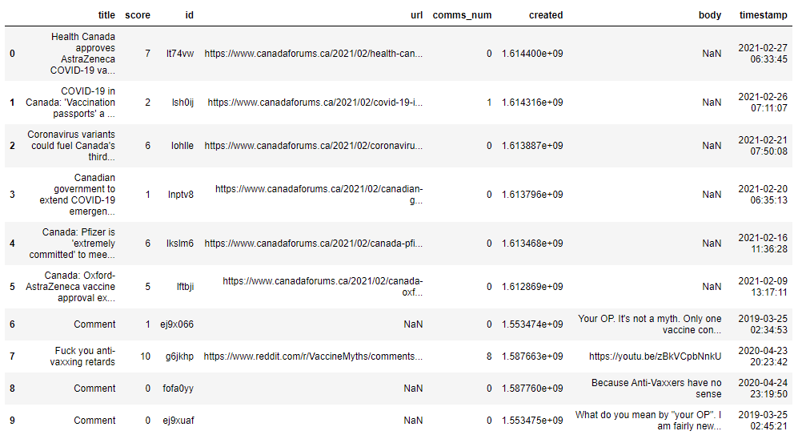
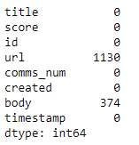
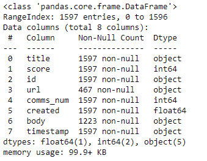
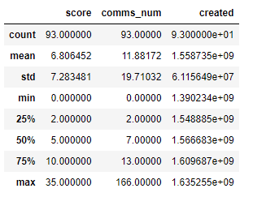
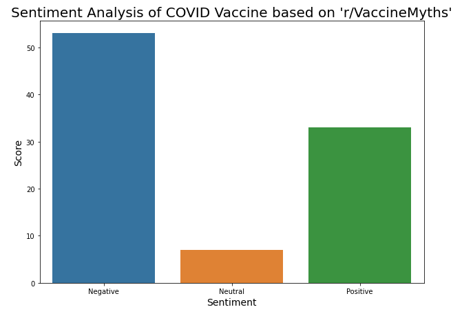

Import statements:
import pandas as pd
import numpy as np
import matplotlib.pyplot as plt
import seaborn as sns
from wordcloud import WordCloud, STOPWORDS
Reading in the dataset:
data = pd.read_csv('reddit_vm.csv')
data.head(10)

Explore and clean the dataset:
data.isna().sum()

data.info()

data = data.dropna()
data.describe()

Determining Positive, Negative, and Neutral classes:
score_mean = round(data['score'].mean())
a = []
for i in data['score']:
if i < score_mean:
a.append(0)
if i == score_mean:
a.append(1)
if i > score_mean:
a.append(2)
Visualising the Sentiment Analysis:
plt.figure(figsize=(10,7))
sns.countplot(a)
plt.title("Sentiment Analysis of COVID Vaccine based on 'r/VaccineMyths'", fontsize=20)
plt.xlabel('Sentiment', fontsize=14)
plt.ylabel('Score', fontsize=14)
plt.xticks([0,1,2],['Negative','Neutral','Positive'])
plt.show()

Generating a WordCloud:
wc = WordCloud(width = 800, height = 800,stopwords=STOPWORDS, min_font_size=10,
background_color ='white').generate(''.join(i for i in data['title']))
plt.figure(figsize = (7, 7), facecolor = None)
plt.imshow(wc)
plt.axis("off")
plt.tight_layout(pad=0)